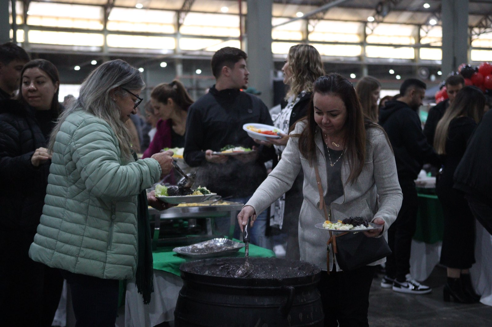
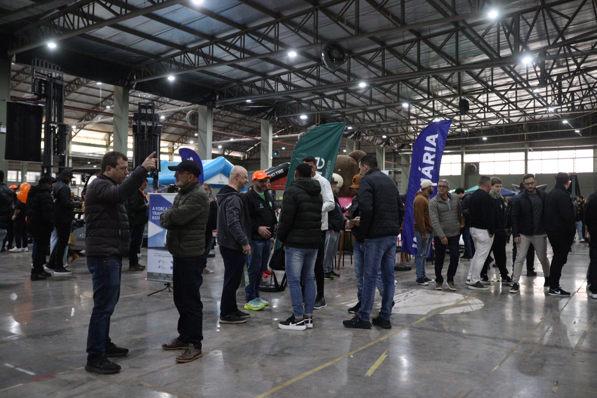
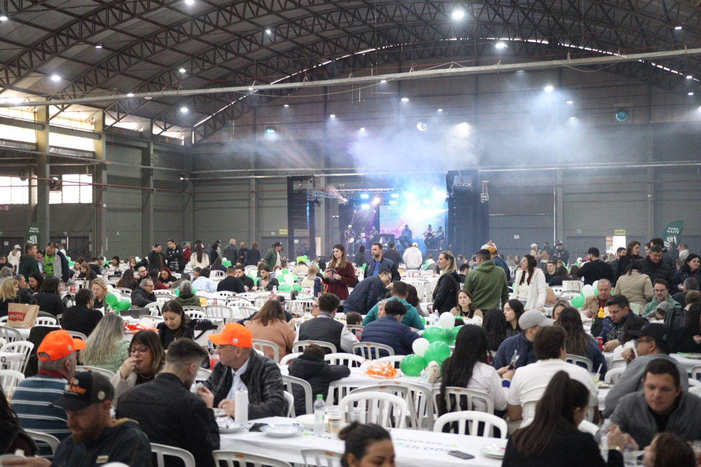

A Associação Chapecoense de Futsal iniciou a contagem regressiva para a terceira edição de sua feijoada oficial, no dia 12 de setembro, um sábado, no Parque de Exposições Valmor Lunardi (Efapi). Faltando pouco mais de um mês para o evento, restam apenas 700 dos 2,5 mil ingressos colocados à venda, evidenciando o respaldo do público ao clube.

O ritmo acelerado reflete o apoio da comunidade e de parceiros comerciais. “O objetivo é reunir 2,5 mil pessoas na feijoada. Deste total, 1,8 mil já foram arrematados pelos patrocinadores do clube, por meio do grupo de WhatsApp com os nossos parceiros. Isso mostra a união de todos para tornar o futsal de Chapecó ainda mais forte”, comentou o presidente Clayton Tressoldi.

A programação inicia ao meio-dia e terá atrações musicais, brinquedos infantis e exposição de patrocinadores. O evento visa superar as marcas anteriores de 1,2 mil bilhetes em 2024 e de 2 mil em 2025.
Os ingressos custam R$ 60 para adultos e R$ 30 para crianças de 6 a 12 anos. Menores de 5 anos não pagam. As vendas ocorrem nas lojas Oficial da Chape Futsal e iXap Sports, pelo fone/Whats (49) 99975-1964, também com a diretoria e colaboradores e na bilheteria do ginásio nos dias de jogos.

Crédito das fotos: @rogersilva_fotografia/@achapefutsal